Archives : 2008-10
聪明的女孩 @ Oct 31, 2008
有位年轻的女同事，每年穿的衣服屈指可数，这个季节除了公司的衬衣就是自己的一件西服外套，下面的裤子没见怎么变化过。可是她的皮肤泛着健康的光泽，晶莹剔透的，不着一点妆容，估计也没用防晒霜什么的。她来公司工作时就开始整牙，整好了每天还要带牙套，要带2年，每天戴12小时，中国人普遍不会关注牙齿美容，这是她让人感到特别的其中一个因素。
和她交流皮肤和衣服的话题，她的观点是：去商场购买上千元一件的衣服，即使打折的也要大几百元，以目前的收入买不了几件。衣服永远都在商场里，等收入高了再买不迟。每年会买几套品质好的衣服在需要的场合备用，所以不急。可皮肤等不了几年，所以要从年轻的时候开始好好保养。
另外，她与大部分女孩子不同之处在于她经常独来独往，让人想起那句“彪悍的人生是不需要解释的。”女孩子一般都有个搭子，到哪里才不会感到孤单。独来独往的女孩内心一定充满自信。工作上她非常勤奋、低调，并无感到她的性别对她的工作有任何影响，也不会象一些女孩子为了达成目的，游刃有余地嗲声嗲气，或兴致昂然于流言蜚语。她有自己独立的思考方式，不随大流、人云亦云，安静而勤奋，想自己所想，做自己所做，周遭人怎么样与她要思考要做的无关。知道自己现在做什么将来要做什么，这样的女孩很是让人尊重和欣赏！
明天是万圣节哦~ @ Oct 30, 2008
每年的10月31日是万圣节，明天我们salsa班的同学老师要聚集一堂，切磋舞艺。
晚上回家给luke也扮扮鬼，去吓吓别人家的狗狗，嘿嘿~
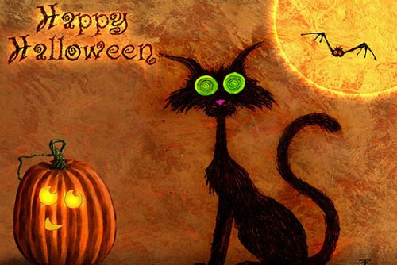
讽刺的《Married Life》 @ Oct 29, 2008
这部黑色喜剧只停留在讽刺层面，还可以挖掘得更深一些。
电影中的他们使用各种阴谋诡计，有时候不单单是为了自私的目的，他们也在想方设法地不去伤害到别人。不过都是那么的自以为是，自认为对方没有自己会过不下去、过不好......讽刺的是另一半也这么想，也和自己做着相同的事情。
最让人感到奇怪的是最初声称对婚姻免疫的“花花公子”Richard，最终也无可避免地要结婚。Richard在经历一切的左瞒右骗之后，对婚姻改变观念。
生活中总有一些人把自己扮作正义的使者，指点周围人，好象自己是最最正直纯洁的那个。看过这部片子之后，想一想我们谁有资格去评判别人的生活？你不是也做着同样的事情么，由此可见，那些表情“正义可爱”的面孔是多么具有讽刺意义！
电影既没有挖苦爱情，也没有否定婚姻。却带来一个疑问：既然这样，人们为什么要结婚？
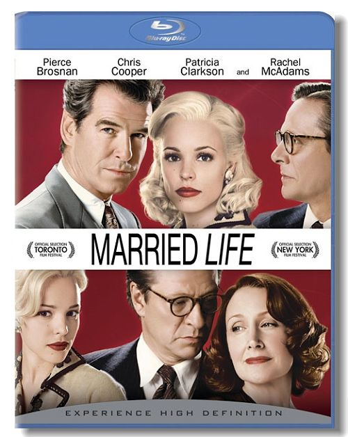
焚烧秸杆 @ Oct 29, 2008
昨天晚上满屋子烟，那种气味好象烧纸的味道。
睡觉前肉眼已经能看到屋子上空白茫茫一片，关了所有门窗打开换气扇。
早晨听新闻才知道，原来是苏中地区焚烧秸杆导致的。
每年这时候基本上会从不同地区飘来焚烧秸杆的气味。
去年，好象是江浦那边。
这种方式会给夜间驾驶的人带来麻烦，好似下雾，视线不好，容易造成交通事故。
爆笑 @ Oct 28, 2008
1、人类生育小动画（超级爆笑）
2、和布加迪威龙飙车的后果
3、英文版《说句心里话》。
4、猩猩做仰卧起坐
5、小胖子作中学生广播体操
苏州。东山。西山 @ Oct 28, 2008
在东山、西山开会，顺便游览。
东山三面临太湖一面临山，在东山有许多果树，虽然摘橘子的过程有点搞笑，但算是体会了点农家“乐”。西山四面被太湖水环绕的小岛，据说面积有香港那么大。在西山游览了两个景点：天下第九洞和石公山。有空可以去东山西山度周末，至于景点我认为不是必须去看的。
在那里每日正餐一定是太湖“三白”，鸡汤、水芹、笋干烧红烧肉、螃蟹、莼菜汤、白斩鸡....每日如此，苏州属那种菜系？即使每天菜肴品种差不多，我还是对东山西山渐渐有了好感，撇开景点不说，行进在路途中看着太湖边上娇艳的红月季花，在芦苇荡背景下甚是好看，满眼江南风光，一点不做作。
摄影是一件需要热情和激情的去做的事，摄影需要独自思考。
摄影的原始动力可以是热爱生活，可以是对美的追逐，可以是钻研机械理论的兴趣，也可以是很爱很爱一个人。TA才能够孜孜不倦地捧着相机...
三春茶叶四月梅，红枣蜜桃喜相连；
初夏端阳枇杷熟，夏至杨梅满山甜；
五月李子挂满树，花红采摘七月间；
石榴大，葡萄鲜，银杏板栗赶秋天；
雪柿红时蟹橙黄，洞庭桔红霜降边。
我拍摄的东山：


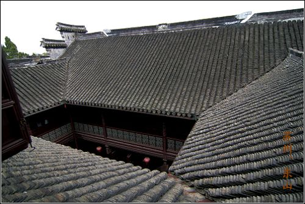
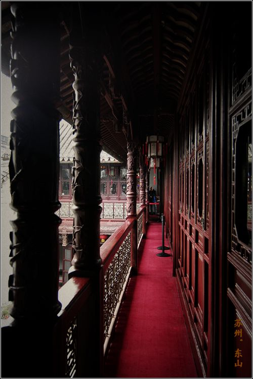


同事拍摄的，遗憾的是很多曝光过头了~


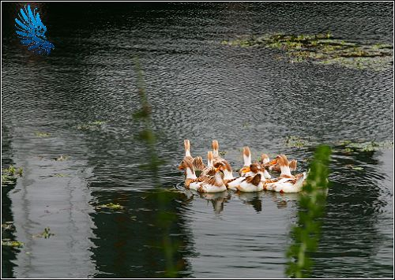

来张开怀畅饮滴。

这是我们公司一个供货商的大别墅，900多平米。据说是90年代在太湖边上买的地自己盖的，现在要买土地，必须要当地户口才行，貌似现在的宅基地。他让家装设计师和他住了两个月，了解他的生活起居习惯后再帮他设计。他生活工作在苏州的木犊，周末过来住。找了村里的一对老夫妻帮忙打理大屋的卫生、照顾一小块菜园，每月给他们2000元人民币。大屋用的是长虹、海信电视，音响也是很一般的国产品牌，大屋正面对太湖，风景很好。在小地方的好处是土财主可以花较少的钱拥有貌似富豪的生活。有人说：人一生拥有1000万人民币（国内）就足够了，之后再多个零，生活本质上也不会有太多差别。


每一个舞步，都是快乐的瞬间。 @ Oct 25, 2008
晚上居然在五台山的宝莱纳遇到salsa班上的老师和同学，好开心！
和同学们跳了好多支舞，一个多星期没去上课，第一支舞结束犹如长跑过后的感觉。今天穿的鞋子非常适合转圈，就象带了轮子的旱冰鞋。这种情况下，就恨舞伴儿让我转圈少了。
看到一对高大肥胖的德国中年男女也在其间，他们的salsa动作简单但欢快律动，其实只要熟悉salsa的节奏和基本舞步就可以跳，无须很多技巧，不是吗？
我的朋友们第一次看我跳salsa，说我跳得蛮好（对我要求低。）
疑问1：为什么你们转那么多圈啊？（为了转晕那些旁观者呀。）
疑问2：怎么感觉象恰恰？（都是拉丁美洲出生，能不象么，但肯定不一样。）
疑问3：那个短发的女生跳得最好（短发女生是我们的老师哎！）
我在想，作为业余salsa爱好者，是不是可以更注重salsa的观赏性和自我展示方面？譬如，在双人舞中让女孩子多些柔媚舞姿，多些腰肢跨部的动作学习，即使没有转圈、肢体复杂配合的技巧也可以在简单的配合中跳出美感和自我娱乐性。如果能够这样，对于很多很多没有舞蹈基础的业余爱好者，对于在各种场合中看到我们salsa的旁观者来讲，会是怎样的鼓励呢？！让零基础的人也可以跳出精彩，并从中找到自信，salsa才能被越来越多的南京人所接受和喜欢。
拥抱。温暖。。。 @ Oct 23, 2008
晚上带luke散步，看到一对20岁左右的情侣在长长的马路尽头深情地拥抱。
霜降的夜晚冷极了，他们的拥抱温暖着我。
而对于他们，拥抱又是奢侈的。
有人说：“婚姻是反人类的。”
婚姻却提供了随时可以拥抱的时空。
然而，在婚姻中人们却渐渐疏于这种温暖的拥抱。

面向生活，桂花香飘。 @ Oct 23, 2008
听着周杰伦新歌《花海》，回想即将过去的一周，好象不是那么忙忙碌碌的了，生活内容几乎没有变化，可是，为什么呢？
总结了一下：
一、上周末购买好这周的食物放在冰箱里；
二、salsa翘课一周；
三、给luke在宠物店办了张洗澡卡。
上周末买了两条鱼，5只青椒，5个西红柿，两块老豆腐，三块白干，一斤小排，6两精瘦肉，两把青菜，1根山药，小半个冬瓜，一袋黄豆芽，一袋鱼圆，一袋鲜蘑菇，几片平菇。
吃到星期四还剩下鱼1条，2只青椒，2个西红柿，3块白干，1把青菜，1根山药。
生活应该就是这样消耗在每日琐碎中的吧？
越来越喜欢“家”，让我放松作我自己的地方。
这样生活着，感觉到塌实，很高兴听到好朋友说：“你现在越来越幽默了。”如果你知道过去的我活得是如何浮躁而紧张，有时甚至在逼自己，和自己较劲儿...如果你感受过那种状态，或许能体会到现在的些许变化。有时真羡慕那些粗线条的人，他们在麻木、冷漠且狡猾的人群中也能快乐着。聪明与狡猾的区别不在智商而在于道德。那么，快乐不在于获得多少，而在于计较得少。
当转身离去，会在心里对自己说：“你才算真正长大。”
生活，应该就是这样的吧？！
所以，不要挣扎。
静止了.所有的花开 ...
遥远了.清晰了爱 ....
情侣们.爱却更喜欢 ....
那时候.我不懂.这场爱 ....
你喜欢.站在那窗台 ....
你好久.都没再来 ....
彩色的.世界染上空白 ....
是你流的泪晕开 ....
不要你离开.距离隔不开 ....
思念变成海.在窗外进不来 ....
原谅说太快.爱成了阻碍 ...
手中的风筝放太快回不来 ....
不要你离开.泪已化不开 ...
经历的阻碍.我在等待重来 ....
天空仍灿烂.她爱着大海 ....
情歌被打败.爱已不存在 .....
Liu．Jo @ Oct 23, 2008
来自意大利的Liu．Jo于1996年由两个热爱中国文化的意大利设计师开创。位于北京和上海的专卖店都走简约的装饰风格，皱皮铁+黑色衣橱，显得高贵宽敞。它的服装很有女人味，但不造作，设计师在裁剪和图案设计上下了很大工夫，将女人的柔媚和帅气合而为一，最适合追求精致、讲究个性的时尚都会女子。其品牌系列有四个：LIU. JO、L.J、L.Jgbd、AJAY 。
Liu．Jo是意大利一个年轻的国际化时尚品牌，在意大利发展了450个多种品牌销售商店和11个单一品牌商店。在法国，英国，比利时，荷兰等国家，Liu．Jo已经进入了250多个多种品牌销售商店。2001年6月Liu．Jo在上海恒隆广场成立了其在意大利以外的第一个单一品牌专卖店。(品牌介绍来自：trends.com.cn)
Liu.Jo上衣，丝毛针织衫，可当开衫穿，也可以作为大披肩用，很有女人味的小荷叶边。左边袖口为精致水钻镶嵌出的logo，且为双层袖口，做工细腻，既不显眼又起了点缀效果。很喜欢这件上衣，喜欢那些关注到细节的设计。可惜这是用卡片机拍摄的:(

无题 @ Oct 23, 2008
6e来了，又走。
自从2005年中国第一次网志年会之后。
仅南大就有700多人应聘他们的职位，今天在东大招聘。
南京正下着雨，气温缓缓下降，而我居然在交谈中忘了拿出包里的相机。
6e胖了，皮肤上泛着健康的光泽，语速依然缓慢。
虽然同年出生，但他稳重地气质俨然象个兄长。
这两年都在尽量避开世俗世界，享有清净自我。
生活安逸，工作稳定，隐隐中期待着天空中的某种光亮。
我庆幸，自己不是孤独中唯一的一个。
Ideas for life. @ Oct 21, 2008
我抱着的是一头小猪：D
抱着他可不容易哦，14.7KGS呢，最大的爱好就是吃和睡。


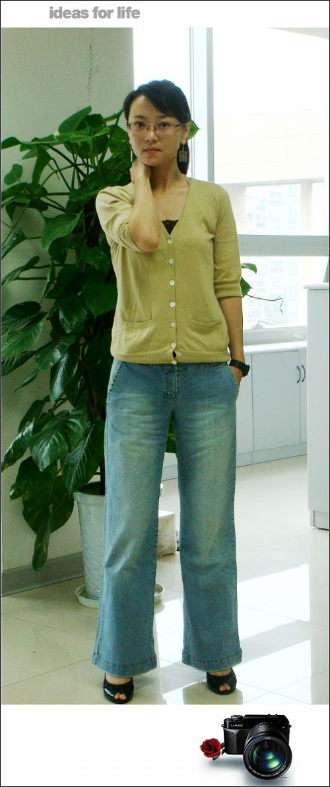
哈狗帮《差不多先生》 @ Oct 21, 2008
胡适写了篇《差不多先生传》，差不多先生最终的悲惨命运绝非偶然。即使他没有丧命于牛医的手术刀下，将来也会死在他的“差不多”中。他的一生凡事追求差不多，殊不知事情往往是差之毫厘，失之千里的，两件差不多的事情常常会有截然不同的结果。所以可以说差不多先生一生都是失败的，而他败就败在这个“差不多”中，可人们……
他死后大家都称赞他样样事情看得透，对事事都不计较，是一个有德行的人，于是大家尊称死去的他为圆通大师，他的名誉越传越远，无数人都以他为榜样。于是人人都成了差不多先生——然而中国从此成了一个懒人国了。
原来差不多先生只是万千中国人的一个缩影而已，而胡适也只不过是用放大镜去写照中国人民的一言一行罢了。
如今MC HOTDOG做了首《差不多先生》的说唱。Hotdog在2008年回归音坛，全新专辑《差不多先生》中写实地批判社会写况，全碟以十首歌曲来贯串现实生活中的点滴，抒发了不可或缺却与琐碎至极的情景，但饶舌态度依然强硬，全民开讲毫不手软。
不需要一堆差不多的音乐 只需要差不多先生热狗
MCHotDog 强势回归，重返写实批判戏谑毫不手软！
热狗说：“30岁有30岁的骂人方式。”
2008狗嘴开讲，一张听得见也看得见的本格饶舌态度宣言。
差不多先生.MP3--MC HOTDOG
我抽着差不多的的烟 又过了差不多的一天
时间差不多的闲 我花着差不多的的钱
口味要差不多的咸 做人要差不多的贱
活在差不多的边缘 又是差不多的一年
一个差不多的台北市 有差不多的马子
差不多又干了几次 用着差不多的姿势
看着差不多的电视 吃着差不多的狗屎
写着差不多的字 又发着差不多的誓
差不多的夜生活 又喝着差不多的酒
听着差不多的音乐 喝醉差不多的糗
有着差不多的绝望 做着差不多的梦
裹着差不多的衣服 脑袋差不多的空
差不多的挂 说着差不多抱怨的话
时间也差不多了 该我那差不多的家
差不多的瞎 指鹿为马 都差不多吧
继续吧 继续瞎子摸象吧 有差吗
我是差不多先生 我的差不多是天生
代表我很天真 也代表我是个贱人
这差不多的人生 这个问题艰深
差不多先生 我的差不多是天生
代表我很天真 也代表我是个贱人
这差不多的人生 总在见缝插针
差不多的反复 总是差不多又一无反顾
差不多的感触 总是差不多又重产物
差不多的孤 差不多的毒
一条差不多的路 我吃着差不多的苦
我嗑着差不多的药 又睡了一场差不多的觉
差不多的烦恼 差不多要把我逼疯掉
差不多的糟 差不多的妙
差不多的闹 又差不多的屌
差不多的中国风 差不多要把耳朵蒙
改世不红 差不多要把你送了终
差不多的歌手 摆着差不多的乌龙
差不多的麦克风 唱差不多的胡隆 都在哭穷
差不多都像个猪头
偏偏我和他们是差不多的猪朋狗友
撒差不多的谎 唬烂差不多的强
骂人差不多的呛 不然你要怎么样！
我是差不多先生 我的差不多是天生
代表我很天真 也代表我是个贱人
这差不多的人生 这个问题艰深
差不多先生 我的差不多是天生
代表我很天真 也代表我是个贱人
这差不多的人生 总在见缝插针
差不多的你 差不多的我
差不多的他 差不多的TA妈
都差不多想发达 差不多打着哈哈
他骂着叉叉嘎嘎呼啦啦 都差不多的咔咔
差不多先生他像个笑话 有闻又在叫骂
差不多要跳不起来 还是要跳要吧
差不多要像乌龟 但乌龟乌龟翘吧
这差不多的人生 他妙吗
差不多要力争上游 想游到上流
差不多在心里默念阿门和佛陀布的放流
差不多的生活很街头 再 差一点你就变成街友
我唱了八十八个差不多 都差不多
差不多先生不会在乎这么多
日子应该怎么过 差不多的2008怎么霍
我是差不多先生 热狗
我是差不多先生 ... ...
我是差不多先生 我的差不多是天生
代表我很天真 也代表我是个贱人
这差不多的人生 这个问题艰深
差不多先生 我的差不多是天生
代表我很天真 也代表我是个贱人
这差不多的人生 总在见缝插针
我是差不多先生
上海品质：百雀羚 @ Oct 20, 2008
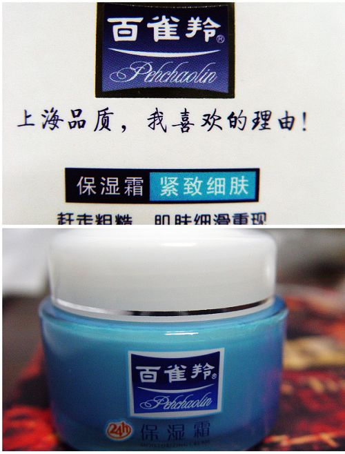
有次出差，一位50多岁的老同事随身携带了这瓶百雀羚，当时没有带手霜，洗完手借了她的百雀羚用，感觉不比国外品牌差。我爸爸大几十年一直是百雀羚忠实用户，我曾给他买过妮维雅冬天用的护肤品，他用了也觉得不错。但最后还是用回百雀羚。认识百雀羚也是从父亲那里开始的，以前是那种扁扁的铁盒子包装，深蓝底色上面有几只小鸟，铁盒打开上面有一层银色锡纸，小心撕开一部分，用完这部分内容再撕另外的部分...里面呈白色膏状，依稀记得很油，因为难吸收，所以容易沾上灰尘和脏东西，但却香味扑鼻。用完的百雀羚盒子会用来装自己的小零钱，家里针线什么的。不经意的再次邂逅，勾起小时侯的很多回忆，上个周末特地到超市里买里两瓶作护手霜用。
如果没记错牌子的话，青春期我常用的是肤美灵洗面奶和3元一瓶的郁美净奶液，白底粉红字体的塑料瓶身，洗完脸涂上奶液，噼里啪啦的用两只手拍打，那之后的脸蛋最美，血液循环，奶液吸收的也好。所以那时侯最喜欢自己刚洗过脸涂完奶液的样子。
80年代后期，学校里开始流行耐克鞋，当时唯一一个款式是皮质白底系带休闲运动鞋，侧面一个大大的红色耐克标志：勾。好象30多元一双吧？接着开始流行防水风衣，穿在身上嚓嚓的响，里面涂了金黄或银白的防水层，据说是进口的涂层，帽子折叠在拉链领子里，肩胛骨那儿有一道透气的纱网。有酒红色、银色、藏青色，我当时有件酒红色的。
我用的第一款香水是桂花香水，忘记牌子了，要扯到过去用的老牌子，还有很多，有人推荐一些国货，绝对精品，量大、安全、好用、便宜到飙泪：
适合干性皮肤的----
洗面奶：大宝美容洗面奶、郁美净鲜奶润白洁面乳、肤美灵（黄色瓶子）
爽肤水：大宝爽肤水、郁美净的爽肤水、千纤草丝瓜水（500ml大概25元左右）、昭贵芦荟凝胶汁、迪赫尔芦荟凝胶汁、相宜本草四倍蚕丝柔肤水
乳液：大宝SOD蜜、宫灯杏仁蜜、芭蕾珍珠蜜、郁美净鲜奶乳液、美加净银耳珍珠滋养蜜
霜：漳州皇后牌片仔癀珍珠膏、芭蕾珍珠膏、相宜本草四倍蚕丝蛋白精华霜、美加净银耳珍珠滋养霜、隆力奇蛇油膏
防晒霜：大宝物理防晒霜SPF20
适合油性皮肤的----
洗面奶：片仔癀洁面乳、肤美灵（绿色瓶子）、郁美净鲜奶润白洁面乳（清凉型）
爽肤水：片仔癀平衡爽肤水、千纤草丝瓜水（500ml大概25元左右）、昭贵芦荟凝胶汁、迪赫尔芦荟凝胶汁
乳液：大宝SOD蜜、宫灯杏仁蜜、芭蕾珍珠蜜、片仔癀保湿滋润蜜
霜：片仔癀珍珠膏、芭蕾珍珠膏
防晒霜：大宝物理防晒蜜SPF18
面膜：相宜本草补水醒肤面膜、相宜本草润白滋养面膜、西藏红花睡眠面膜
卸妆：百雀灵凤凰甘油一号——即可以用来的当卸妆油、也可以用来当爽肤水、也可以用来当乳液、还可以用来当面膜，因为是透明啫喱状，可谓是万能甘油，一点也不油，是芦荟胶那种状态，我都是用它来卸妆或是当爽肤水的。

百雀羚(始于1940)年
上海家化的老牌子，早在1930年，公司前身——富贝康化妆品有限公司成立。1940年富贝康公司隆重推出国内首创 的香脂类产品--“百雀羚”香脂(Peh-ChaoLin CREAM)。1978年，随着“凤凰”品牌的诞生，结合世界先进的科技与中国的传统医学，先后开发出风靡市场的凤凰珍珠、凤凰高级胎盘和凤凰活性胎盘等营养系列化妆品。彻底改变了肌肤由单纯的“保护”功能进入全面“护理、滋养”的生活理念，实现了化妆“营养肌肤”的全新革命。公司先后获得了“上海著名商标”及“上海名牌产品”等多项称号。
消费者热赞产品：百雀羚冷霜护肤脂（香脂）"滋润型（轻轻一推就化成液态了，吸收快，不粘腻。过了半小时再照镜子，脸上不仅没有油光，用手摸起来还好光滑）。
百雀龄凡士林润肤霜:号称国产小黄油，能与倩碧黄油媲美。
凤凰甘油一号：经典的国货精品，任何肤质适用，纯正、温和、无刺激绝对不含色素和香料。可全身使用，全面滋润，无需加水，直接涂抹。是论坛JMS大赞的实惠质优的保湿滋润圣品！
南京.真人真事 @ Oct 20, 2008
转自同事丫丫的MSN SPACES，真的很爆笑。
在晓庄附近上班朋友的空间里记载的真人真事：
今天在公交车上，由于拥挤一男一女发生了碰撞。
时髦女郎回头飞眼道：“你有病啊？”
男子觉得莫名其妙回道：“你有药吗？”
车上人窃笑！
女子觉得生气回道：“你有精神病啊？”
男子冷面对道：“你能治啊？”
全车人爆笑！
公交司机停车，趴在方向盘上大笑！
*************************************
这是珠江路上上班的朋友遇见的
公交车上超挤，有一女人站在门口，从车后面挤过来一个ＧＧ要下车，跟那女的说了一句“让一下，下车”，那个女滴木有动。
ＧＧ挤过去时就踩到她了。结果那女人好厉害的，不停的骂“神经病啊你！神经病啊你！~~”，还超大声，搞得全车都看呀。
ＧＧ一直木有说话，下车时忍不了了，回头对那女人说，“复读机呀你！”
全车人暴笑~！
后边有几个搞笑的小孩，不停的伴演刚才的一幕，甲说“你神经病呀你！。。。。。乙说“你复读机呀你”。。。。。。全车人暴笑~！
后来，有个小ＭＭ也要下车，挤过去怯怯滴说“偶~偶~偶想下去，偶不是神经病~！”
全车人再次暴笑~！
那个女人木有说话，可是从边上飘来一句话“你是不是没电了”
全车人暴笑不止~！
早上起床时，男人女人的差别。 @ Oct 20, 2008

《Atonement》 @ Oct 17, 2008
刚看完《Atonement》，内心充满了无尽的忧伤，印象深刻的英式口音，20世纪40年代的氛围色彩，男女主角思考着的双眸，又一个悲伤的爱情故事。虽然他们在相爱的时候各自面临死亡，但故事结尾却在Briony的书中给于人们一个相爱到永远的结局......在彼此相爱着还能真实的触摸着对方是多么幸运的事儿。
看多了美片里“波涛汹涌”的女性形象，女主角Keira Knightley的平胸倒给人以智慧、高贵的视觉。这个23岁女演员的男友Rupert Friend与《指环王》和《加勒比海盗》中的Orlando Bloom长相十分相似。
*最主要说的是男主角James McAvoy，他有双多情的蓝眼睛，《Atonement》的导演Joe Wright酷爱史诗片，他正是因为原著小说而选定了James McAvoy。“当我读到‘他有一双乐观主义的眼睛’这句话时立刻想到了James，他确实有着闪烁的、盛满希望的眼睛，总能看到光明。”Wright说。
*James McAvoy表示自己对《Atonement》情有独钟，他说：“作为演员总是有持续的不确定性，你对你做过的工作，都不确定，有的时候真不知道--这究竟是不是一部烂片？而对《Atonement》，我的体验完全相反，实际上我觉得那是段最美的时光。”
他看上去并不是那种典型的英俊型，但后来每个女人都会迷上他。他看上去有种天使般的无邪，同时又具有男子气概，而且他看起来很真实，又很有性格，非常吸引人。
James McAvoy 2000年从英国皇家音乐与戏剧学院毕业后，一直从事舞台和影视表演，象所有初出茅庐的小演员一样跑着龙套，演着小配角，直到BBC 2004年的热播剧《Shameless》（无耻之徒）让他在英国成名，还因此收获了爱情，2006年迎娶了比他大9岁的英国演员Anne-Marie Duff。
*以下为他参演的片子：
《Wanted 》，《Becoming Jane》， 《Penelope 》，《The Last King of Scotland 》，《Starter for Ten 》，《Shameless 》，《Inside I'm Dancing 》，《The Last Station》，《macbeth》，《Shakespeare Retold 》，《Strings 》，《Bright Young Things 》，《Perrier's Bounty 》，《Ben-Hur: A Tale of the Christ 》...

29岁的James McAvoy和大他9岁的妻子Anne-Marie Duff。

心灵花园 @ Oct 17, 2008
小区有户人家的门口摆着黑色油亮的大陶罐、长长的竹枝、竹藤编织的门帘、小石狮子和各种迷你花草。每每从那家门口路过，都要多看上几眼多享受一番东南亚风情。
曾看过一本杂志上介绍，一个在巴黎的中国女孩的浪漫追求，她懒得在工作间耗费心力，却为自己的五尺花园费尽心思。租赁昂贵地段，却拥有了日日相望的花园，盆栽上描画着自己的心情，更是减压妙法。
和中国花卉市场不同，巴黎人更喜欢买来花草的种子，种植在自家花园。所以在巴黎，不论是几家合用的大花园或是私人的小花园，几乎处处花香四溢，再小的阳台都是开满丁香。“Jardinier”和厨师一样，是受人尊重的职业，甚至被认为是艺术家。我们常可以从国外的电影中看到某某人离职时，怀里除了捧着一个纸箱外可能还会有一小盆植物。
想拥有漂亮的花园，浇水其实很有讲究，应掌握不干不浇的原则，浇水量要少一些。面积有限的小庭院里种植花草并不容易，以前我养什么植物死什么植物，究其原因就象母亲给孩子很多很多的爱一样，我以为多浇水肥花草能长的更好，结果它们都相继死亡。小庭院地方小，光照少。克服这些不利条件的办法应改为盆栽。我们种花草不是为别人，其实是为自己。每一次照顾都会让自己的心成熟一些，你越耐心，花朵就会变化一次。虽然这些花草并不名贵，但带来的满足感却丝毫不逊色，把时间花在这些有生命的美好事物上，是幸福的。
瞧！我养的花怒放的盛开喽~


培养动手能力 @ Oct 17, 2008
据说国外的人动手能力比国内人强？曾听说有人在澳大利亚买了土地自己盖房子，有点不可思议。国内就不同了，农村自己盖个楼房可以，城市要自己盖房子估计挺难的。
昨天下班后到宜家买了张电脑椅和一个鞋架，宜家安装费用为商品金额的2.5%，不足20元按20元计算，算下来那张电脑椅安装费在20元钱。因为要预约安装时间就放弃了。晚饭后拆开包装箱自己安装，里面除了配件还有安装工具，大约用了40多分钟安装好两个东西，小有成就感。买宜家产品可以培养动手能力哦！忙完这一切，只有一个半小时供我消磨了~
生活，原本是没有情调的？！ @ Oct 16, 2008
在身体上，从来没有感觉到象这段时间这么累过。
上班总有这样那样的事牵挂着，远非工作本身需要动脑子。
下班了却忙得四脚朝天，没完没了的家务。
昨天的salsa课来了许多学员，练习时，老生新生将整个房间站满了。上堂课和这堂课男生少，女生多。基本会抢舞伴吧？但秩序井然，想来女生都想挑一个高手搭配练习，才不枉上课的真正目的。在没完没了的家务事下，我感到自己的体力越发下降，手上的皮肤也沧桑了。
昨晚睡觉前，看了会杂志，那本杂志上有大段大段的文字，阅读能安慰我的心灵，但很快就睡意朦胧。晚上醒了好几次，luke在我的床边鼾声大起，睡得那个香。早晨起来扭头看到luke醒了趴在床边等我起床。忽然觉得自己过得不如一条狗，luke除了吃喝拉撒睡就是玩球，什么都是人给它伺候好了。人呢？什么都得自己操心，妈呀，别人都是怎么过家家的？难道生活，原本是没有情调的？！
今天晚上决定什么都不干，就是消磨时间，看电影吃零食....

回避&欣赏 @ Oct 14, 2008
喧哗热闹的人，总害怕被周遭忽视，害怕远离人群、被遗忘在角落。
极尽所能的喧哗只为抵抗心中的恐惧与不安。
不由自主会回避喧哗热闹的人，有种虚无感。当人群散去，喧哗热闹变成孤独与焦虑相伴。相反，渐渐欣赏那些沉稳的表情，会说话的眼神。
他究竟该如何选择？ @ Oct 14, 2008
一友，和女友交往N年后，发现自己居然爱得还是N年前暧昧的她，而对女友的喜欢与爱无关。这两天，我经常会想起这个刚发生的故事，有点儿电影味道。
男孩对N年前遇到的女孩一见钟情，相识半年后，一个去国外读书，一个在国内工作。
N年后在他们认识的同一天又再次相遇，N年前对女孩的感觉一点没变，还是心跳加速，魂不守舍，思想共鸣。此时，他们仍然是两条平行线，分隔两地的生活与工作。
感情有时很复杂，有时却很简单。简单到一个人的出现，会立即颠覆之前所有的判断：喜欢不等于爱！此前，男孩把GF当成结婚对象且毫无任何疑问的明确...
与N年前的她再次相遇后的半个月，男孩发现他仅仅是喜欢GF，而不是爱。
他们象兄妹一样快乐的相处，象家人一样熟悉到一致，却不是爱。
他究竟该如何选择？
《The Promotion》 @ Oct 13, 2008
有关职场竞争和励志的电影。
对主人公的经历有似曾相识的感觉，但过程却既轻松又惆怅。
加拿大人Richard说：“其实我们都是出来混口饭吃的，没必要这样。”我只记得大概的意思，原话不能一一写下。Doug和Richard都希望得到一家超市分店主管的职位，他们二人都有着不同的生活压力，故事平凡真实得让人产生熟悉的共鸣。
这部电影的编剧和导演是Steve Conrad，他也是《The Pursuit of Happyness》和《The Weather Man》的编剧，大致传承了一贯的风格，以小见真情，没有矫柔造作，也没有过分的煽情，但却并不显得小儿科。非常值得推荐！
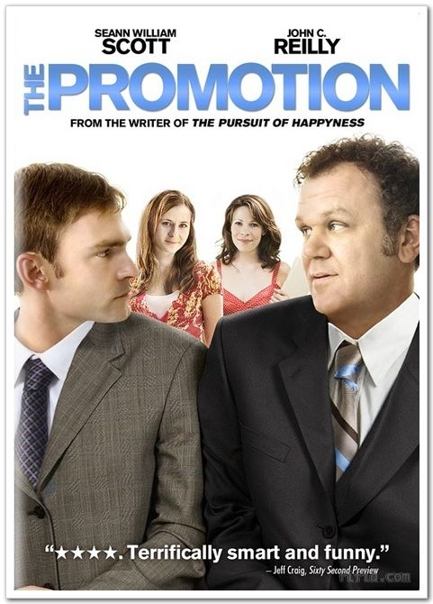
。。。 @ Oct 13, 2008
为自己看重的人和事努力，但不勉强。
糟糕的一天 @ Oct 12, 2008
睡到中午11点多才醒，洗个热水澡，吹干头发，带Luke出去遛。
遇到一只贵宾犬，Luke迎上去与它相互嗅嗅，那只贵宾犬抬起前腿趴在Luke背上，Luke不愿意了，呼呼几声，两只狗便打起来，当然是Luke的体型占优势，把对方死死的压在身下。双方主人赶紧拉扯，把贵宾犬抱起来的时候，鲜红鲜红的血从他的前腿流出来....
和对方主人把贵宾犬送到医院治疗，这一天就这样在宠物医院度过了：（一整天下来，只吃了晚饭...本来应该是美好的星期天，原本打算在家吃了午饭，下午去看车展，然后到超市将下周的口粮备足，却被这场宠物之战给搅和了！
公狗为何会骑在另一只公狗身上？如果不是同性恋，那么就是征服的信号，潜台词是：我是老大，你得听我的。Luke当然会不高兴陌生的公狗趴在他的背上。第一次见到Luke将别的狗狗咬得这么惨，治疗过程贵宾犬受了老鼻子罪，让人心疼，心里真是过意不去。
之前带Luke去上海会Toby，Toby欺生，总是对着Luke叫，还不时用身体挡住Luke的去路，Luke偶尔表示友好，趴在地上摇尾巴也没能让Toby停止这些行为。有次Luke四脚朝天躺在地上我逗他玩，Toby吃醋打算走过来挤Luke，Luke翻身将Toby压在脚下，嘴里发出威胁的声音，经过2、3次较量，Toby看见Luke便顺着墙根走，尽量躲着Luke。公狗以战争来分清实力大小，较量之后才会一方服从于另一方吗？
Luke对人非常友好，也表现出绝对的服从。对公狗却恰恰相反，可是母狗朝他吼几声，他便很自觉地离开了。很难琢磨的心理？
现在给狗看病的开销比给人看病要贵很多，因为治疗而死亡的狗狗，宠物医院基本不需要付什么责任。今天去的艾贝尔宠物医院，今后再也不愿光顾那里。这家医院赚钱比给狗治疗要重要的多，戴眼镜的女医生还时不时给你点脸色看，谁让你催人家赶紧清理伤口，没看见人家在开付费的单子么？谁让你询问治疗价格，人家当然要给你脸色看喽！第一次到艾贝尔宠物医院给狗狗看病，肯定要你掏个3、500元才能结束，艾贝尔是加盟店，加盟费就是门槛，而不是医术标准，经过过这样的服务水准，谁还愿意再去呢？后来我们又去了别的宠物医院询问，人家说有只狗狗头被咬了个洞，伤口清理之后上了药，两天就好了。这只贵宾犬腿上原本就一个针眼大小的伤口，艾贝尔的作法是将伤口剪成3、4厘米长，将药水反复灌进去4、5次，然后再挤出来，还要给狗狗做全身麻醉，我们没同意，因为给人做全身麻醉，会影响到人的神经系统，影响记忆力。艾贝尔所谓的局部麻醉就是往上面滴些药水，别说狗狗疼得死喊活叫，换了个大男人也受不了这种折腾。只有这样才能让你掏更多的治疗费出来。手术结束后，挂了三瓶药水，几乎清一色半瓶装，药费却是全价滴。本来可以站立行走的贵宾犬，治疗后压根无法站立。话说回来，现在的宠物医院有几家让人安心、放心的？所以，祈祷自己的宠物别受伤别生病，才是关键。
一个奶业工人的实心话（转帖） @ Oct 10, 2008
我所学的专业是乳品工艺，刚毕业曾在某国内老大级乳业集团工作。职位——收奶员。
这几天的三鹿事件，沸沸扬扬。其实在我看来，没什么奇怪的，事情总是要被揭穿的，只不过是时间问题，以及是哪一家企业成为那个撞上枪口的倒霉蛋。三聚氰胺————冰山的一角。也许这个事件就要告下一个段落，也许仅仅是个序幕的开始……
离职的员工到处去说原来公司的“坏话”，这个员工一定个没有道德的人。曾经我也是这么认为的，可最近我的想法变了，一个知道内情而不去告诉别人，眼看着别人吃亏上当的人，那才是个彻底道德败坏的人。
离职后，我没喝过一滴奶！
我先讲一下，收奶的过程。奶农的牛奶由当地附近村镇的奶站化验收集，按品质高低，分等级付给奶农钱。品质的指标不外乎PH值，蛋白质，干物质这几项。然后由奶站（当然了奶站是私人老板的）用罐装车混装后运到工厂，然后由工厂取样化验，测算指标同样按品质高低，分等级付给奶站钱。不知道大家看没看出来，想没想到这种操作模式会出现什么问题？有人说了，不是“天然牧场”“工业化收集吗”？有，的确有。但是我只能说：兄弟，你很傻，很天真！
奶农想多赚钱怎么办呢？简单啊，掺水啊。那掺水指标降低就卖不上好价了怎么办？简单啊掺****啊。奶站想多赚钱怎么办呢？简单啊……。奶站的奶是从各个散户收来混装到罐车的，有一家的突然变质了，怎么办啊，全车都倒了吗？几十吨一罐的奶，蛋白质低了怎么办？干物质低了怎么办？PH值低了怎么办？有的牛病了打过抗生素怎么办？有的牛催奶打激素怎么办？
话说回来了，奶农那点小计量能瞒奶站吗？奶站那点小九九能瞒工厂吗？如果我说，奶站不知情，工厂不知情。都是“不法奶农”干的坏事，全国人民要把矛头指向他们批判。那我可就真的，很傻，很天真。
我们从来不拒收奶，因为我们知道，一件东西是要充分利用的，这样才能取得最大的价值，获得最大的利润。我们分罐储藏。最好的奶，供到车间做酸奶（发酵型酸奶或搅拌型酸奶），因为不是好奶做不出来。其次，做纯牛奶，高钙奶之类的。再差的奶做花色奶即花生奶，早餐奶等。还有那些发酸的奶怎么办呢，当然不能倒了，做酸性乳饮料，就是广告狂哄乱炸的，女人小孩都喝的***。这是本公司最大的利润所在，一盒奶的成本，还没有哪个包装盒值钱。还有那种臭的熏人的奶怎么办呢，简单，做冰激凌味道最好。还有那些又臭成粘稠状的怎么办呢，做奶粉。当然这叫工业粉，它有它的用途，不是装袋子就上市场的。
我们有全球最大最先进的立体式仓库，媒体都赞扬过，可是你就没想想这快速消费品，生产出来就要卖的，搞那么大仓库什么用？酸性乳饮料越存放味道越好。那有人问了，生产日期怎么办？简单啊，提前打一个月，你也许不信吧，因为在你心中那是小黑工厂做的事。那又有人问了，市场上卖的岂不是过期奶？我就这么告诉你吧，你手中那盒奶就是过期一周了，你喝也没问题。因为你所卖的奶是UHT超高温灭菌液态奶。
关于UHT超高温灭乳到底有没有营养，我不想再说了，因为这个涉及到某人在某年为中国提出的一个口号，我们正向这个口号迈进，别管你喝的是什么奶，反正是牛奶。
有个广告，中国某企业已经是这种超高温灭菌乳全球产销量第一，难道是那些乳业发达国家真的比不上我们了吗？其实是人家不生产这种乳品了。这笑话有点冷是吧。
那有人说了，我们以后喝高端奶吧，广告都说想过有品位的生活就和那种奶。是啊，那奶是贵啊，贵的东西就好啊，那奶蛋白质高啊，高，实在是高，这一点澳大利亚人都服我们啊。
我就不相信地球上的奶牛能挤出那么高蛋白质的奶……
此言一出，某些专家就会来“辟谣”又得列出一套数据理论，来“引导”大家。
是啊，我嘴没人家的大，钱更没人家拿的多……还有很多关键的还是不说为好，知道了对大家谁都不好。生活是美好的。
真实案例看三鹿奶粉背后的恐怖的行业潜规则
目前闹得沸沸扬扬的三鹿奶粉事件，作为一个可能的知情者和懂点化学的人，我也来谈谈我的观点：
1、媒体也好，厂家也好，国*家质量监督也好，还是在忽悠大家，为什么我敢这么说，因为三聚氰氨根本不可能直接加入牛奶中，三聚氰氨的市场售价并不低，奶农不可能不计成本的提高浓度，其次，三聚氰氨水溶性较差，要想完全溶于牛奶比较麻烦；那为什么媒体，厂家，国*家质量监督要异口同声的说是不法之徒加入了三聚氰氨，其实就是为为了掩盖一个更可怕的问题，那就是加入的其他毒性更大的东西，说穿了就是尿素，尿素作为一种便宜的农家化肥，真是经济实惠的“好添加剂”。
2、为什么要加尿素，因为各乳品公司收购鲜奶，测试的标准主要是奶的蛋白质含量，说穿了就是氮的含量，尿素作为一种最普遍的氮肥，由于它独特的分子结构，记得好象是两个氮分子配个什么我忘了，氮的含量当然高了，混入奶中，提高氮浓度，价格自然也卖得高了；
3、尿素怎么转化为三聚氰氨的，很简单，奶粉的生产过程就是将鲜奶放在封闭的环境高温环境下，然后采取喷雾的方式直接转化成粉状就成了奶粉，而尿素在高温下会产生变化，生成三聚氰氨，OK，有毒的奶粉就这样生成了。
最后，我在谈谈我怎么知道这些内幕的，前几年，是01年还是02年，我记不太清楚了，在办理一件带黑社会性质的案件时，他们主要罪状之一就是把持我市某区的牛奶收购市场，长期以次冲好，我们在办案中就了解到，他们在牛奶中加入尿素、少量食用油，然后加大量水（良心好的加自来水，不好的就直接加池塘或者田里的水），最后用专用的搅拌机进行搅拌，一批蛋白质浓度高的鲜奶诞生了，但最后几个犯罪分子都翻供，说他们这种做法是普遍的，并不是他们发明的，后来我们专门去天友了解，确实如此，他们对牛奶收购中出现的这些问题根本没有比较有效的检测措施或者是因为收购站点太多，没有精力和金钱来负担这么大的检测开销，所以对广大奶农的行为基本采取的是默认的态度，而且据在天友的了解，这种现象在全国的乳制品行业是普遍的，只要存在向奶农收购牛奶，就普遍存在次类现象，所以三鹿事件的发生就是必然的，而且这次三鹿出了事，全国其他所有奶制品企业都保持沉默，没有一家跳出来指责，什么原因大家看了我的帖应该心里有数了吧，最后弱弱的问大家一句，这样的牛奶你们敢喝吗？
出差。 @ Oct 08, 2008
又是一整天的出差。
早晨7：10闹铃响，再眯一会儿吧，一睁眼7：52分，以最快的速度出门，到了公司已经8：10分。干了一天的活，脖子上粘乎乎的满是汗渍。这次出差虽然累，但很愉快。
路上和同事海聊，人，真不可貌相，平时看起来惯宝宝的80后，居然会做很多菜，自己打扫卫生，有些轻微的洁癖。现在会做家务的年轻人少，况且还是80后的男士。和有轻微洁癖的人生活在一起，另一方必会感到压抑。洁癖的一方也会不爽。以前看到地上有点脏就要动手弄干净，喜欢家里整整洁洁，事实上那样自己会很累，但又很难忽略。发展到后来可以睁只眼闭只眼过日子了，这才少许轻松。洁癖是和自己过不去，追求完美，也是强迫症的一种。应该属于心理问题吧？
拌面，海碗。面条里加了蛋清，不腻口，味道不错。
接待的人带了两只农夫山泉的塑料瓶，里面盛着深黄色液体。说是酿造了9年的药酒，人家拿五粮液跟他换，他都不答应。这酒是用三年酿造的米酒，之后加入中草药，放置6年。酒水有挂杯现象，第一口下去很冲，几秒钟食道有燃烧感，热。第二口第三口...便适应了，50度以上酒精含量。这种用很多年酿造的酒越来越少，市场需求大，快餐效应，五粮液也没这个口感醇。当然我是极少喝白酒滴。我哥和我姐夫国庆期间打开两瓶五粮液，第一瓶白开水味道，第二瓶辣嗓子...政府是不是也应对酒水市场做一次全面的检测呢？

9月出差时拍的。
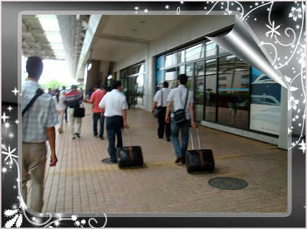


人居特别荣誉奖 @ Oct 08, 2008
联合国人类住区规划署(人居署)6日在内罗毕宣布,中国南京市政府荣获本年度联合国人居奖特别荣誉奖,绍兴市政府、张家港市政府获得联合国人居奖荣誉奖。
今年获得人居奖荣誉奖的还有俄罗斯的布古利马、卢旺达首都基加利和墨西哥的华雷斯。
人居署在内罗毕发表的一份声明说,在当前世界陷入金融危机,欧美许多国家民众都在为自身住房贷款问题担忧之际,中国城市在改善人居条件方面为世界提供了许多值得借鉴的经验。因此,今年6个获得联合国人居奖的城市中3个来自中国,而且其中的最高奖项特别荣誉奖有史以来首次颁给一个城市而非个人。
原文来自www.news365.com.cn
这份奖项是在南京市民毫不知情，也没有做任何特别准备的前提下进行的，可信度比较高。不象9月份全国评选文明城市，政府上下抓城市管理，大街小巷都是警察和小红帽，10月份这些人少了一半。
到目前为止我还没有真正爱上这个城市，有些外地的朋友到南京来基本上会说喜欢南京，说这里很适合居住。想想的确是，南京人收入在全国属中上水平，生活节奏不象北京上海那么快，相对压力小一些。绿化覆盖面积大，环境还算可以。今年禄口机场开通直达德国的航班，一朋友到欧洲出差，飞机起飞前给我发一短信，说因为开通到欧洲的航班而感到很骄傲......南京一点点的变化，牵动着市民的心，比如这个“人居特别荣誉奖”，让人惊喜之外也会受到鼓舞，为这个城市感到骄傲。
灿烂。 @ Oct 07, 2008
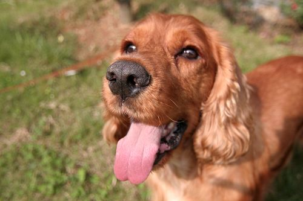
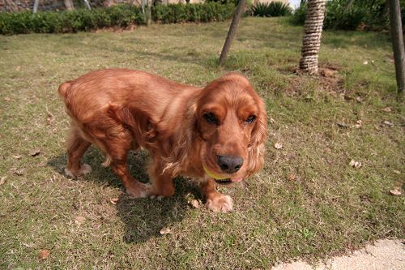
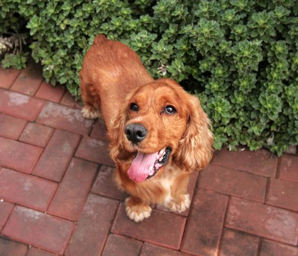


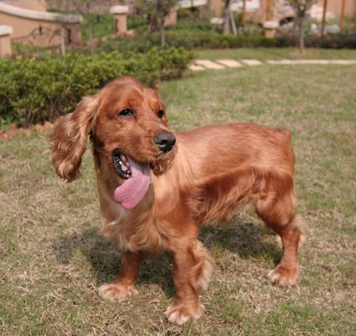
满城尽是桂花香 @ Oct 07, 2008
没有比这个季节的凉爽更舒服的感觉了。
夜晚空气中熟悉的味道可以一次又一次将我带回到从前。

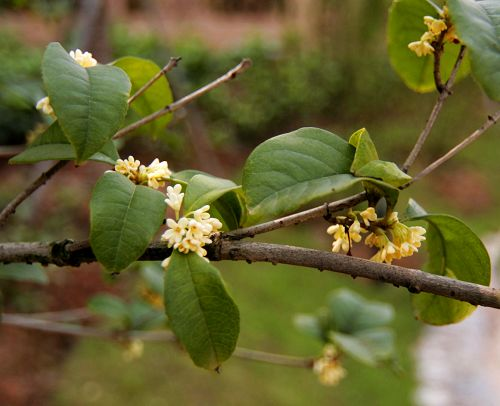
无题 @ Oct 05, 2008
**为什么我们总认为自己的价值观比别人好？
**有个性的人，常常会遭到别人的误解。
**假期就这么毫无感觉的结束了，没有感觉也是感觉吧？
**坚持自我，也许只有在电影里才能做到？
**漫长的工作日，明天即将开始。我们的表情将失去假期里的轻快。
**刚看完电影版的《sex and the city》，Samantha在婚礼前夜的祝酒词中说到：“我们是最好的朋友，但是我们不是大嘴巴...”爱，困扰女人一辈子，尤其困扰着电影中四个可爱而自我的女人。
《Smart People》 @ Oct 04, 2008
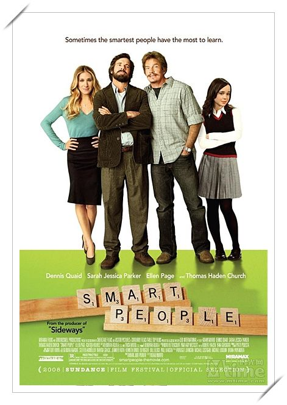
丹尼斯·奎德和萨拉·杰西卡·帕克饰演的男女主角，这两位我都喜欢。
配角演技也不赖，艾伦·佩吉和托马斯·海登·丘奇饰演侄女和叔叔，叔侄搭配的“老少对”在影片中甚至给人印象更为深刻。
艾伦·佩吉说的一句台词：“你看某某修女，不是怀抱弃婴，就是搀扶着满脸褶子的老妇人，那是因为她的SAT考试只有中下成绩。象我们这样的社会精英，不用以这样的方式来补偿社会。”
IQ高，EQ低，这就是片中所谓的聪明人。
Sometimes the smartest people have the most to learn.
洗。澡。快。乐。 @ Oct 03, 2008
Luke怀抱着它的玩具睡着了。

洗澡的Luke非常配合。
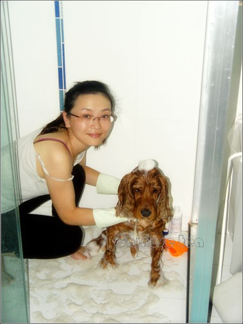
陌上花开，缓缓归。 @ Oct 03, 2008
子非鱼，安知鱼之乐 @ Oct 03, 2008
好心情常常被一些自以为是的电话扰乱。
那些电话对于我该做什么该说什么指手画脚。
电话另一端的人，难道和我有着相同的思维方式和内心倾向？
电话另一端的人，是否真正拥有成功的人生？
电话另一端的人，也许只是在指手画脚中找到了成功的感觉？
说别人的话，做别人要做的事，那是别人的人生，不是我的。
做一个有趣、快乐的人，比做一个时常对他人指手画脚的人要智慧得多。
清净是幸福的一种，请不要用“自以为是”打搅我的幸福。
过节。放风 @ Oct 02, 2008
它们也过节~
国庆节堵车已经不是稀罕事，路上人堵才是景观。
不出来不知道，一出来吓一跳，街上都是人...
稍象样的饭店门口，吃饭时间也排起了长队。
除了家，估计没有清净的地方。
一到放假的日子，敢情大家都出来放风了。
中国人为什么这么多？
越简单，越快乐。 @ Oct 02, 2008
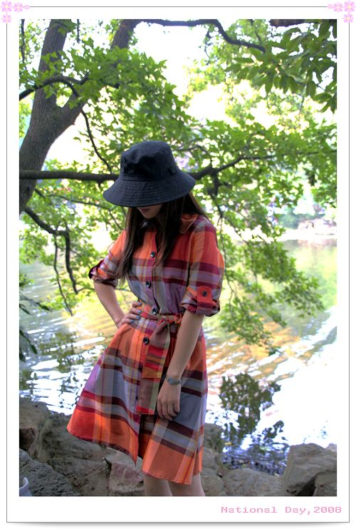
这个国庆长假因为哥哥来宁，完全...完全..不属于我自己了。
就这么跟着、陪伴着在整个南京城里转悠。
很多人会认为：“亲戚嘛，难得...”
是的，就是因为难得，所以硬着头皮拖着每日缺乏睡眠的面孔，满大街奔忙。
什么时候才能让人悠闲的喝杯茶，看看电影，睡个午觉，梳理梳理心情？
眼见着假期过半，连续的工作日即将到来，有哪一天是属于自己的呢？
换位思考一下，自己去别的城市，还是不要打搅熟人比较好，大家见面聊一聊，就此告别。该旅行的旅行，该工作的工作，感情交往越简单，越快乐，不是吗？谁也不要成为谁的负担。